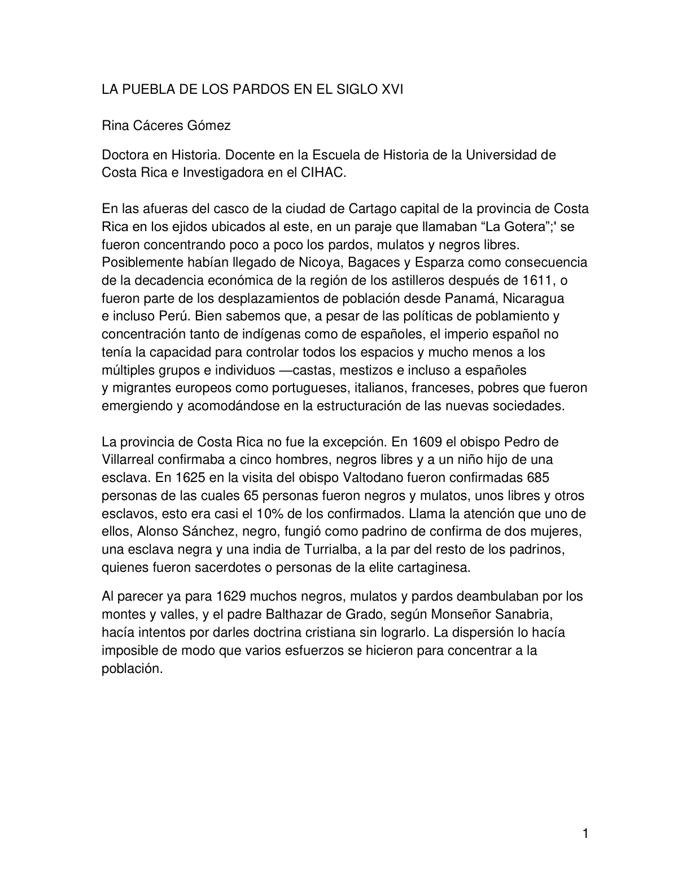

Selecciona una respuesta para ver la retroalimentación.
Secciones del texto
Escucha las secciones breves del texto y luego resuelve el reto de comprensión.
Asocie
Relaciona cada concepto con la idea que mejor lo explica dentro del texto.
Selecciona una opción para cada concepto.
Sopa de letras
Selecciona las letras con el mouse hasta formar cada palabra.
Palabras
Encuentra las cinco palabras.
Secuencia histórica
Una ruta breve por los momentos mencionados o derivados directamente del documento.
Reto de secciones del texto
Responde cinco preguntas seleccionadas al azar sobre la materia del texto. Cada acierto suma 10 puntos; el sistema muestra avance y resultado final.
Revista de Historia
Consulta el PDF mejorado desde el artefacto con navegación directa por página.

Créditos y fuente
Información bibliográfica y reconocimiento de elaboración del artefacto.
Documento base
La Puebla de los Pardos en el siglo XVII
Autora: Rina Cáceres Gómez. Revista de Historia, n.° 34, julio-diciembre de 1996, páginas 83-113. El texto estudia la presencia y participación social de poblaciones negras, mulatas y pardas en Cartago colonial.
Elaboración del artefacto
Alberto Jiménez Ruiz
Asesor regional de Matemática, DRE-Cartago 2026.
Diseñado como apoyo interactivo para explorar información histórica y practicar comprensión con preguntas autoevaluables.